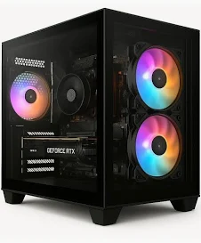

O PlayStation 5 (PS5) é o console de nova geração da Sony, lançado em novembro de 2020. Ele oferece gráficos avançados, carregamentos ultrarrápidos com SSD, e suporte a 4K e até 120 FPS. Seu controle, o DualSense, traz gatilhos adaptáveis e resposta tátil, proporcionando mais imersão nos jogos. O PS5 é compatível com quase todos os jogos de PS4 e possui títulos exclusivos de alto nível. Está disponível em duas versões: Padrão: com leitor de disco. Digital Edition: somente para jogos digitais. Com design moderno e desempenho poderoso, o PS5 representa um grande salto na experiência dos videogames.
O Xbox Series X é o console de nova geração da Microsoft, lançado em novembro de 2020. É o mais poderoso da geração, com 12 teraflops de potência gráfica e suporte a 4K até 120 FPS, além de possibilidade de resolução 8K em jogos e vídeos compatíveis. Possui um SSD de 1 TB que garante carregamentos rápidos e melhor desempenho. Seu design é compacto e em formato de torre. O controle é uma versão aprimorada do Xbox One, com mais precisão e ergonomia. O console também é retrocompatível com milhares de jogos do Xbox One, Xbox 360 e Xbox original. Destaca-se pelo Xbox Game Pass, um serviço por assinatura que dá acesso a centenas de jogos, incluindo lançamentos no dia da estreia.


O PlayStation 4 (PS4) é o console da Sony lançado em 2013, sendo um grande sucesso de vendas mundial. Ele marcou a oitava geração de consoles com gráficos avançados, grande biblioteca de jogos e uma forte comunidade online. O PS4 usa um HD tradicional (500 GB ou 1 TB) e possui uma interface simples e rápida. Seu controle, o DualShock 4, trouxe touchpad, sensor de movimento e luz interativa.
O Skill Aquarium SKA003 é um PC gamer de entrada/intermediário, com bom desempenho para jogos leves e uso geral. Especificações principais: Processador: AMD Ryzen 5 5600G (com gráficos integrados Vega 7) Memória: 16 GB DDR4 (3200 MHz) Armazenamento: SSD M.2 de 512 GB Fonte: 500W Placa de vídeo: Integrada (não tem GPU dedicada) É ideal para eSports e tarefas do dia a dia, mas limitado para jogos pesados em alta qualidade.
O Nintendo Switch é um console híbrido, que pode ser usado como portátil, de mesa ou conectado à TV. Lançado em 2017, ele é conhecido pela versatilidade e pelos controles destacáveis Joy-Con. Apesar de ter gráficos mais simples que PS5 e Xbox Series X, se destaca pelos jogos exclusivos como Zelda: Breath of the Wild, Super Mario Odyssey e Animal Crossing. Há 3 versões: Switch padrão Switch Lite (só portátil) Switch OLED (tela melhor e som aprimorado) Ideal para quem busca diversão, mobilidade e jogabilidade criativa.